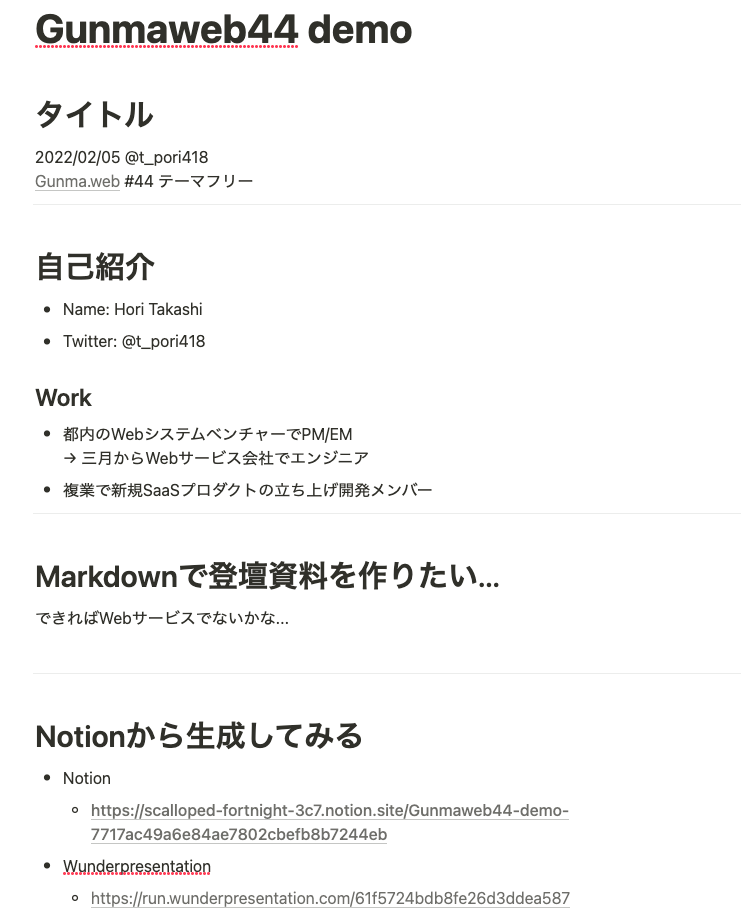
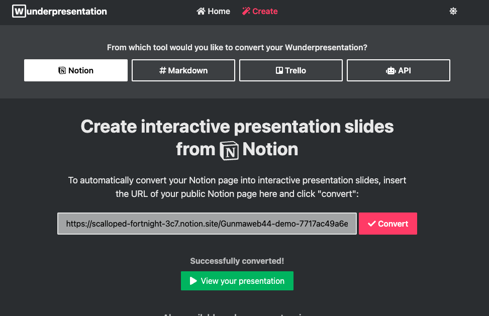
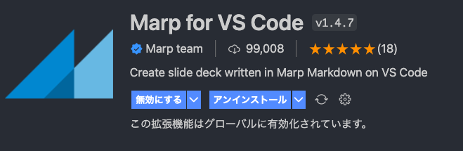
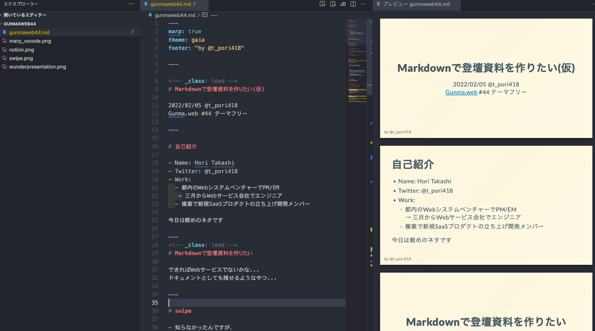
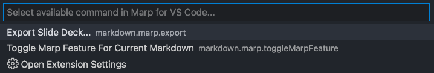
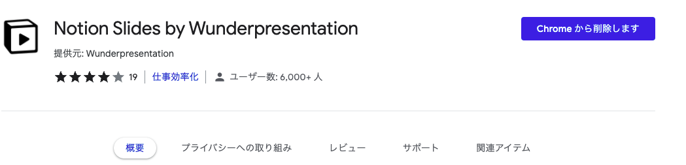

Markdownで登壇資料を作りたい
Marp, Wunderpresentation
2022/02/05 horitks Gunma.web #44 テーマフリー
自己紹介
- Name: Hori Takashi
- Twitter: @t_pori418
- Work:
- 都内のWebシステムベンチャー企業でPM/EM → 三月からWebサービス系の企業でエンジニア
- 複業で新規SaaSプロダクトの立ち上げ開発メンバー
今日は知ってる人は知ってるって感じの軽めのネタです
スライドをMarkdownで書きたい！
できればWebサービスないかな… ドキュメントとしても残せるようなやつ…
swipe
- 知らなかったんですが、 サービス終了してました😢

Notionから生成できたら便利では？
→サービスあった
※notionの説明は割愛します。Webドキュメントツールです。
wunderpresentation
Notion
- 書いたのはこんな感じ→
- 公開設定にして・・・ 
wunderpresentationのサイトでconvertする 
デモ
めっちゃ楽! けど
- notionを公開する必要がある
- スライドがPDFでDLできない
- 動画は表示されないっぽい
Webサービスじゃなくても、
普段使っているエディタで楽に作れて
git管理できると良い、と考えてみる
Marp / VSCode に落ち着く
選定理由: VSCodeのプラグインがあって手軽そうだったから
開始手順
- VSCodeインストール
- 拡張のmarpをインストール
これで markdown書くだけ

プレビューしながらマークダウンを書いていけます。 
PDF出力して完成! 
Git管理できるしドキュメントに集中できて最高！
弱点は…
- 細かいレイアウトを気にし始めるとCSSとかを書く必要がある
- (そっちのが好きな人には利点とも言える)
- (そっちのが好きな人には利点とも言える)
- パワポみたいに動画を埋め込むことはできない
- 画像の配置難しい
所感
-
その場限りでPDFの配布ないLTとかならNotion+Wunderpresentationでサクッと作っちゃうのもアリかも
-
普段VSCode使ってるのでMarpはプラグイン利用できたので良い体験だった。プレビューしながら書けるのがでかい 今回はMarp+VSCodeで資料作成した。
-
関係ないけどPullRequestベースの発表とか自分もやってみたい
他に何か良いツールあるよって方いたら是非教えてください
Appendix
WunderpresentationはChrome拡張もあります。

Appendix
- プレビューだけならvscode-revealとかも良さげです。
- PDFはあんまりいい感じに出力できなかったです。